-
I recently converted my 2WD 2003 Frontier to 4WD…after a Winter trip to WY (Never again, will I drive a 2WD truck, with an open carrier, on snow and ice). After adding the transfer case, front diff, axles and other parts…the truck got heavier, and I can feel the difference in the little skinny pedal, on the right. So..inspired by posts about: 1.) the "VG34" that uses 4-valve Infinity Q45 pistons, and; 2.) claims of super thick VG33 cylinder walls… I went searching for flat-top pistons made for bore-sizes larger than the VH45DE. Long story short, I'm using a flat-top 94mm piston (without valve reliefs) and a compression height close to stock VG33E specs.
The next step: buy a JDM VG33E and strip it down, which I've done.
I'm part way through the build, and have endeavored to answer persistent questions and 'Internet conjecture'…like, what's the required depth for valve reliefs? What kind of static compression will I get with flat-top pistons? Can I make the wrist pins fit? How much heavier are the pistons, and is it enough to significantly upset factory balance? Etc..etc..
I've solved some of these problems already, but the motor isn't done yet. I'll keep posting a bit at a time, and as I make progress. Posting takes time.
Inspired by the progress thus far, and urging from one of my brothers (an experienced manufacturing and mechanical engineer), I decided to share the experience thus far…and until I'm done. We'll see how this thing runs…in a month or so, I hope. I'll post more, in steps…as time allows.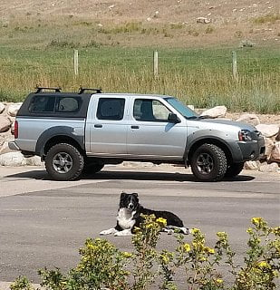 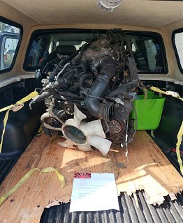 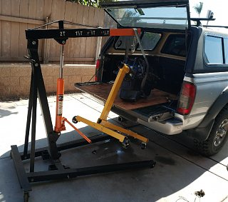
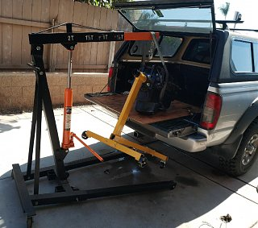

-
Interesting, I guess that the cylinder wall thickness was actually checked. Details such as what head gaskets should be useful to others as my VG days are past but will follow for sure. -
I did use a sonic meter to check cylinder wall thickness prior to having the block bored. I saw roughly 6.5 to 9.0 mm of wall thickness on the meter, depending on where the measurement was taken (I took two or three measurements in each cylinder; I did *not* do a super-thorough check because I'm confident of Nissan's casting quality and - more importantly - I'm determined to build this damn motor; I'm inclined to accept the risk associated with a little uncertainty. Based on the measurements I took, after boring to 94mm, simple math dictates that the block should have a minimum of roughly 6.5 - ((94.0 - 91.5 [stock bore]) / 2) = 5.25mm, or ~0.200" (a few pictures of post-overbore measurements are attached). I'm comfortable with what I see, and especially after seeing the smooth outside-surface of the cylinder walls through the holes previously occupied by the casting core-plugs. As I expected…this Nissan block looks *far* more cleanly, precisely cast than the late 60's and 70's American engines I've built, and similar in quality to Porsche and Alfa Romeo castings I've dealt with. In other words, I'm comfortable that there isn't enough core-shift present in this block to be concerned about areas that are "too thin." I think this thing is going to run reliably…but proof will be in the pudding. As for the head gaskets, after a bit of research, I found that I could have a custom set of multi-layer steel gaskets made for about $350 or, a custom set of graphite composite gaskets for $150 or…I could rely on the $45 off-the-shelf Fel-Pro head gaskets, that have a factory-specified armor/"fire ring" ID of 94.23mm (Fel-Pro engineers were kind enough to tell me about their manufacturing process in terms of expected variation due to particular manufacturing methods i.e., stamping). After laying the Fel-Pro gaskets down on the 94mm bores, and seeing final deck height of my pistons, I'm happy with what I see.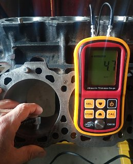
 Last edited by mzerega; 11-30-2018, 01:35 PM.
Last edited by mzerega; 11-30-2018, 01:35 PM. -
This weekend, I'm going to assemble the bottom end. For now…here's a bit about the reference to "High Compression":
My pistons are 94mm hypereutectic with flat-tops, anodized crowns, a coated skirt and a 0.945" pin (pardon the switching of measurement-units; my tools are built for Imperial measurement). Stock wrist pins are 0.826" O.D. (more on this later). Specifications from Nissan's factory service manual, and some simple math, reveals: 8.963" block height - 6.069" rod length - 1.251" piston compression height = pistons sitting 0.009" below the block deck at TDC. With this deck height, and assuming 51cc for cylinder head combustion chamber volume (I used math to deduce this; I did not take measurements), and 0.510" head-gasket compressed thickness (with 3.710" fire ring I.D.), the stock 83mm stroke and new 94mm bore yields a tiny bit over 10.4:1 (I'm happy with this, and expect the motor to run great on premium gas). I do not intend to modify the OEM engine management system (e.g., fuel/spark map).
To fit the new piston's 0.945" piston pins, I removed the stock rod bushings (opening the small end to 0.942"), and then honed the small ends to run steel-on-steel with 0.0008" oil clearance i.e., a relatively tiny amount (~0.004") of material was removed; I am *Not* comfortable removing enough material for a bushing on the larger wrist pins. There's plenty of Internet conjecture suggesting you shouldn't run a floating pin without a bushing but, credible and/or hard evidence supporting this assertion is weak at best. Note that GM produced factory motors without pin bushings; there may be others, I don't know. Bottom line: I'm going to run it this way -- note the nice, big oil hole in the top of Nissan's factory rod. I think plenty of oil will get up there, and onto the pin.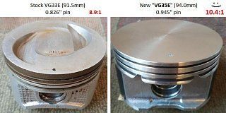 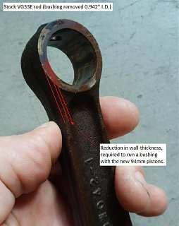
Last edited by mzerega; 12-03-2018, 10:22 AM.
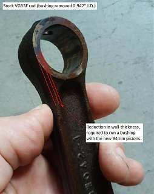
Last edited by mzerega; 12-03-2018, 10:22 AM. -
Very cool. I'm always interested in N/A builds,
What are the pistons from?
Are you doing anything to the heads?
Doing anything different with the oil pump?
If this works out for you I might try and duplicate it!
Keep up the good work! -
It took me longer than expected to get the bottom end assembled; I wasn't able to get the wire-type retaining rings installed in the pistons without damaging the pistons. So…I ordered the appropriately-sized internal snap rings via mail order. I searched through piston manufacturer specification-books and chose the pistons by bore size and compression height. Specs are included in prior posts. The new pistons are roughly 30 grams heavier, and to adjust for this potential addition to reciprocating weight, I took about 4 grams off the small ends of each rod…while also getting them closer in weight (among each other. I also matched the big ends while I was at it - I am impressed how close they were, from the factory). Another 15 grams came off with the small end bushings, which I removed (as per prior post) - I'm running the piston pin on the raw rod bore. Net of the changes, there's roughly 10.5 grams of additional reciprocating weight. Using the math for centripetal acceleration, that extra weight adds roughly 19 lbs. of extra weight at TDC and BDC…at freeway cruise. I'm not concerned with this, considering that the total 693 grams is roughly 1,300 lbs. at the same cruise RPM i.e., 19 is only a 1.5% change; I'm going to run it like this. For the heads, I did what I'd call mild port work. I spent about five hours on the heads…not two days, for example… hence my use of the word, "mild." I don't have a flow bench, but I suspect I got whatever gain there was to be had through taking off obvious casting marks, sharp edges and smoothing everything out. The oil pump I'll run is the stock VG33E pump. I simply took it apart and cleaned it, and reassembled the pump. This weekend - I hope - I'll get the heads reassembled and double-check the camshafts (0.420" lift, 208 duration @ 0.050", 114-deg. lobe separation). Tomorrow, I spend a little time on the dyno, to get a comparative baseline with the stock VG33E that's currently in the truck. After I get this thing buttoned up and broken in, I'll take the truck back to the dyno to see what was accomplished. As a side benefit, the shop I'm using specializes in GT-R mods; this is going to be a fun trip to the dyno.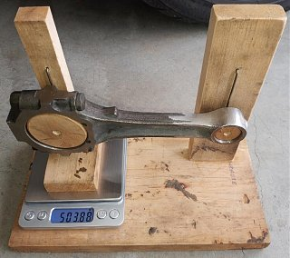 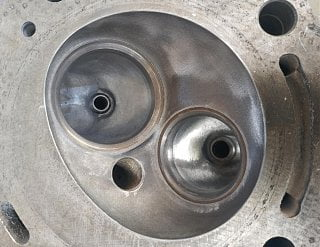
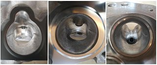
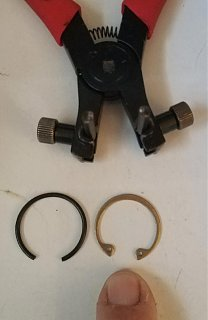
Last edited by mzerega; 12-12-2018, 01:21 AM.
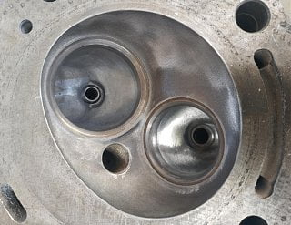
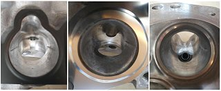
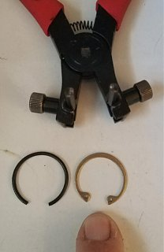
Last edited by mzerega; 12-12-2018, 01:21 AM. -
I got the base-line dyno run dataAt the rear wheels, the truck made a max of roughly 170 HP (@ 3000 RPM) and 130 ft. lbs. of torque (@ 4500 RPM). My â03 Frontier looked a little out of place, among the fleet of high-dollar sports carsâ¦but thatâs fine - There was something fun to do while I waited for the technicians to do the three dyno runs

Last night, I put the heads together. Prior to this, I double checked my high school trigonometric model (that calculates the position of the valves and piston, relative to the crank center-line, at varying crank positions while the piston is near the valves). I bonded the internals of two lifters (so I could get true, constant zero clearance at the rockers and valve tips â I used the rocker shaft bolts to get zero clearance) and I put plasticine/clay on top of the new, flat-top pistons (with the new .420â lift, 208 duration cam installed). As the model predictedâ¦there *is* ample piston-to-valve clearance without having to cut valve reliefs into the pistons. Iâm happy about thisâ¦and confused why the guys who built the VG34 went to the trouble of, ââ¦duplicate[ing] the VGâs valve notches on the Q pistonsâ¦â â anybody know why they did that?
One side-note: Iâm replacing the four, stock (steel) intake manifold bolts with stainless fasteners. Iâve taken two of these VG33 motors apart, and they both had the same super-rusty bolts attaching the lower manifoldâ¦and they were difficult to remove without messing up the threads (due to all the built-up corrosion). Upon closer inspection, I can see that at least one of these bolt-holes penetrates a cooling passage in the head â hence the corrosion. Anyway, that problem will be solved by the stainless bolts and a tiny bit of silicone on the threads.
Iâm hoping to have time to pull the VG33Eâ¦and swap in my âVG35â in about a week. In the mean time, can anybody share any tips or tricks for priming the oiling system in these motors?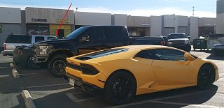") 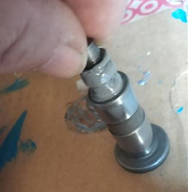
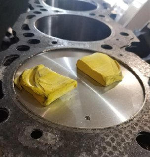
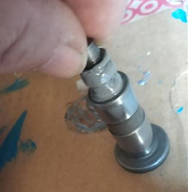
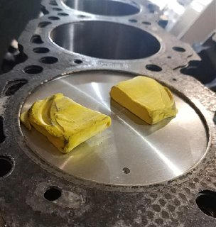
 Last edited by mzerega; 12-14-2018, 11:50 AM.
Last edited by mzerega; 12-14-2018, 11:50 AM. -
Nice work, did you just put the piston at tdc and manually open the valves to required height? Or did you hook up all the timing gear and rotate it all?
Maybe the 3.4 notches are for a non interference fit?
Do you have a part # for the pistons? Do you think that if you used "DE" rods they could have been bushed?
Thanks! -
Thanks - I absolutely love building motors. There's not many things more entertaining, in my opinion Anyway, yes, I did assemble the motor with the heads (cams included) and solid lifters. This is how I got accurate measurements off the plasticine i.e., that's how the yellow stuff in the previously-posted picture was smashed by the valves -- by solid lifters set to zero lash, off the 0.420/208 camshaft…properly phased using the factory markings and timing belt. If I had to guess, I think people cut the valve reliefs in Q45 pistons because they see the reliefs on the OEM VG33 pistons. And I think those reliefs are present on the OEM pistons simply to avoid annoyed owners who: 1.) don't replace their timing belt as per factory recommendation or 2.) take their vehicle to mechanic who installs the belt incorrectly… i.e., in either case, creating a condition where the pistons could hit the valves. In other words, having those reliefs allows the pistons to reach TDC with the valves at max lift, and there's no contact.
Anyway, yes, I did assemble the motor with the heads (cams included) and solid lifters. This is how I got accurate measurements off the plasticine i.e., that's how the yellow stuff in the previously-posted picture was smashed by the valves -- by solid lifters set to zero lash, off the 0.420/208 camshaft…properly phased using the factory markings and timing belt. If I had to guess, I think people cut the valve reliefs in Q45 pistons because they see the reliefs on the OEM VG33 pistons. And I think those reliefs are present on the OEM pistons simply to avoid annoyed owners who: 1.) don't replace their timing belt as per factory recommendation or 2.) take their vehicle to mechanic who installs the belt incorrectly… i.e., in either case, creating a condition where the pistons could hit the valves. In other words, having those reliefs allows the pistons to reach TDC with the valves at max lift, and there's no contact.
Note that this build *will* result in bent valves if the belt is installed improperly, or if the belt breaks -- it would be ugly.
I don't know what "DE rods" are…but, of course I could drop $1,000+ on some custom rods with bushings but, frankly…I don't think it's necessary. There's factory motors and racing engines that run steel-on-steel, and I've never seen or even heard of a credible account of a problem with such a setup.Comment
-
Sorry, I assumed you knew about DE's.: VG30de is the twin cam engine in the z32 300zx ( and other cars). They have stronger rods ( and crank ) that bold right into other vg's.
I've never had a DE rod in my hand so I was just conjecturing (sp?) if it would be able to be bushed.
Piston part #?
-
Anyone heard of any updates on this project? -
Life has a tendency to get in the way of projects -- pardon the delay. I spent a crap-load of time detailing everything…which put me back substantially. Anyway…it's done, and it runs awesome. I'm super happy with the results. The truck went from 'sluggish' to 'quick' -- it's a totally different truck, in terms of how it drives. It's freakin' awesome. I'll have no qualms about pulling a camper trailer with this truck. And, we now have absolute confirmation that you can run a zero deck-clearance, flat piston without valve reliefs -- in a VG33 motor, with a .420/208 single-pattern camshaft -- and it'll run just fine without contact between the valves and pistons. In fact, it will tolerate a bit more lift and/or duration…although, with the current cam, there is a tiny bit of stumble at idle and I wouldn't want any more (to each his own). When I had everything apart, I tapped into the oil pan and main oil galley and added a DC gear pump. I did this for two reasons: 1.) so I could prime the oil system prior to starting up this flat tappet motor (I installed double valve springs instead of the single, adding ~47 lbs. of open pressure), and 2.) because of the geek-appeal; I've simply always wanted to install a pre-lube system. Frankly, I doubt there's any significant practical benefit, and I don't care; I think it's cool. I also added an aftermarket cruise control system, and used the Nissan factory cruise throttle-cable connection/bracket. It's a tidy install
In a week or so, I'm going to get this thing back on the dyno and see what's actually getting to the rear wheels, and then we can compare what was actually achieved to the stock baseline captured back in December.
I'm so damn happy with the results, I'm building the motor the came out of the truck…the exact same way. I couldn't stand to see that perfectly good motor just sitting there on blocks.
I'll post dyno results as soon as I've got 'em.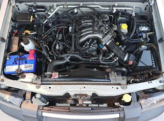
-
Nice!! Glad to hear the positive results! Looking forward to the dyno readings.
Were you able to find a part # for those pistons?
Thanks! -
Great! what aftermarket cruise control system did you use?Own:
1986 Z31 2+0 Turbo GLL ---- spearco IC ,3" exhaust, Poly everything with solid subframe and diff mounts, HX35/40 Holset Turbo, CLSD, Nistune with 1220cc FIC injectors on E85.
1993 Jeep Cherokee 4X4
Owned:
1995 Z32 2+0 NA Black
1985 Z31 2+0 turbo Black
1986 Z31 2+0 NA Red
1988 Z31 2+2 NA Auto
1988 Z31 2+0 Turbo White ---- Stripped for all of its goodies.
1984 Z31 2+0 turbo Brown
1985 Z31 2+0 NA Black
2003 Nissan frontier D22 supercharded vg33e 4x4 -
Finally..here's the post-build dyno results (in red, below). Regardless…I gotta say > the truck is waaaay better to drive now - I love it! It doesn't feel sluggish anymore…doesn't drag and slow down on long inclines like it did before…and it accelerates sufficiently while getting on the freeway. I'm super happy with the results, as felt through the pedal and driver's seat
Oh..and the cruise system came from a company called Rostra. They're easy to find on the Web.
Before we look at dyno results, we'll remember that Nissan says the stock VG33E produces 180HP @ 4,800RPM and 202 ft-lbs. @ 2,800 RPM. These are crankshaft specs, not rear-wheel specs. I increased displacement by 5.6% so, all else equal, it's crystal clear that we should expect to see 5.6% increase in power (factor of 1.056) since the motor is now burning 5.6% more air+fuel. So all else equal, the increased displacement from this project contributed about 10HP: 180 * 1.056 = 190HP at the crank.
Estimating increases in power from increased compression is more tricky. The 16.7% increase in compression increased thermodynamic efficiency - by producing more expansion over the piston's stroke length, and by compressing the now-hotter air+fuel mixture into a smaller space, improving fuel/air mixing. But how much additional power do we get? This is tricky to estimate because "…over the load and speed range, the relative impact on power and thermal efficiency varies." To keep things simple, I'll based my estimate on somebody else's lab work Based on the paper (pdf) referenced below, I'm comfortable with assuming another 2% (3.6HP in this case) increase in power i.e., 180 * 1.02 = 183.6
ABRM.jpg
So far, the above suggests we should expect to get another 13.6HP at the crank, from increased displacement and compression alone. But we didn't…at least not according to three more runs on the dyno.
The camshafts I installed increased valve lift by 18.6%, and duration by about 12%. The actual dyno-result following *all* the work done showed an increase to ~192 HP @ 3,900 RPM at the crank (extrapolated from 146HP measured at the rear wheels, using OEM spec of 180 as a base) occurring at 300-900 RPM sooner, and torque increased by to ~207 ft-lbs at 3,900 RPM at the crank (extrapolated from 182 ft-lbs measured at the rear wheels, using OEM spec of 202 as a base) occurring at 1100 RPM later.
The port work and increased cam lift and duration are supposed to help the cylinders, to help fill them closer to their maximum efficiency. But if Nissan engineers already did good a job with their design and manufacturing, there might not be room for improvement. In fact, it's possible changes could negatively impact all their super-intelligent work. All I did to the castings is remove bumps and smooth the interior port and chamber surfaces. Based on results from this project, it appears to me that Nissan engineers did a great job on the heads and camshafts. And I don't think the head work or cams did anything of any significance to increase power (I think it's possible the cams reduced potential gains). Would results be significantly different if I changed the factory exhaust manifolds and rest of the exhaust systems? Perhaps… (maybe next time).
Here's some good reading on the technical aspects of this project.
http://www.imedpub.com/articles/infl…ion-engine.pdf
https://www.khanacademy.org/science/…-carnot-engine
I put a lot of time, effort and money in this thing. After coming this far, I consider this an R&D project â Iâm not going to provide a piston part number. What Iâll share is generally how I went about this: I sifted through publicly-available piston manufacturer's parts-books, and I picked a piston that has specs that interested me. You can put just about any piston in any hole if you measure first. Of course, I couldâve just ordered a custom piston set with whatever specs I fancy…but I wasn't willing to spend $1,000. As a reminder: the pistons I installed use a larger, heavier wrist pin, which requires removing the factory rod bushing and enlarging the small end. The wrist pin bosses don't have an accommodation for oiling like the factory pistons do, and; the oil-control ring groove doesn't allow the oil to flow back to under-side of the piston, like the Nissan pistons do. Having said all that, I'm working with a professional mechanical engineer/machine designer and a piston manufacturer to make a modified version of the 94mm piston, to incorporate features from the Nissan factory piston, including the smaller pin. My objective is to create a quality hypereutectic piston - for half (or less) of what custom pistons cost - that incorporates factory-designed oiling features, and that allows anyone to build a 3.5L, 10.4:1 motor, using their old VG33 without having to modify anything but the bores.Last edited by mzerega; 03-06-2019, 03:34 PM. Reason: Fixed some typos

Copyright © 2006–. All rights reserved. Privacy Policy
Comment